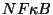

Next:
Description biologique du modéle
Up:
Exemples
Previous:
Exemples
Le module de signalisation de

Subsections
Description biologique du modéle
Modéle non compartimenté
Modèle compartimenté
Résultats de modélisation
Ovidiu Radulescu 2004-01-21